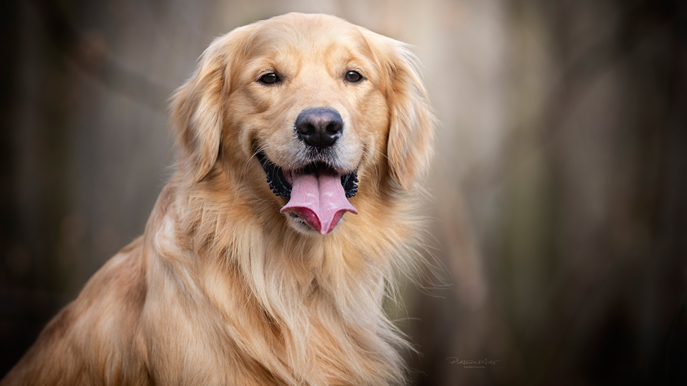

StrongeDogs
Que coman saludables y contentos Para que tu hermano de 4 patas sea fuerte y alegre ademas del amor que se les brinda tiene que recibir un alimento rico y nutritivo para ellos , es decir el alimento de strongedogs

Second Thumbnail label
Cras justo odio, dapibus ac facilisis in, egestas eget quam. Donec id elit non mi porta gravida at eget metus. Nullam id dolor id nibh ultricies vehicula ut id elit.

Third Thumbnail label
Cras justo odio, dapibus ac facilisis in, egestas eget quam. Donec id elit non mi porta gravida at eget metus. Nullam id dolor id nibh ultricies vehicula ut id elit.